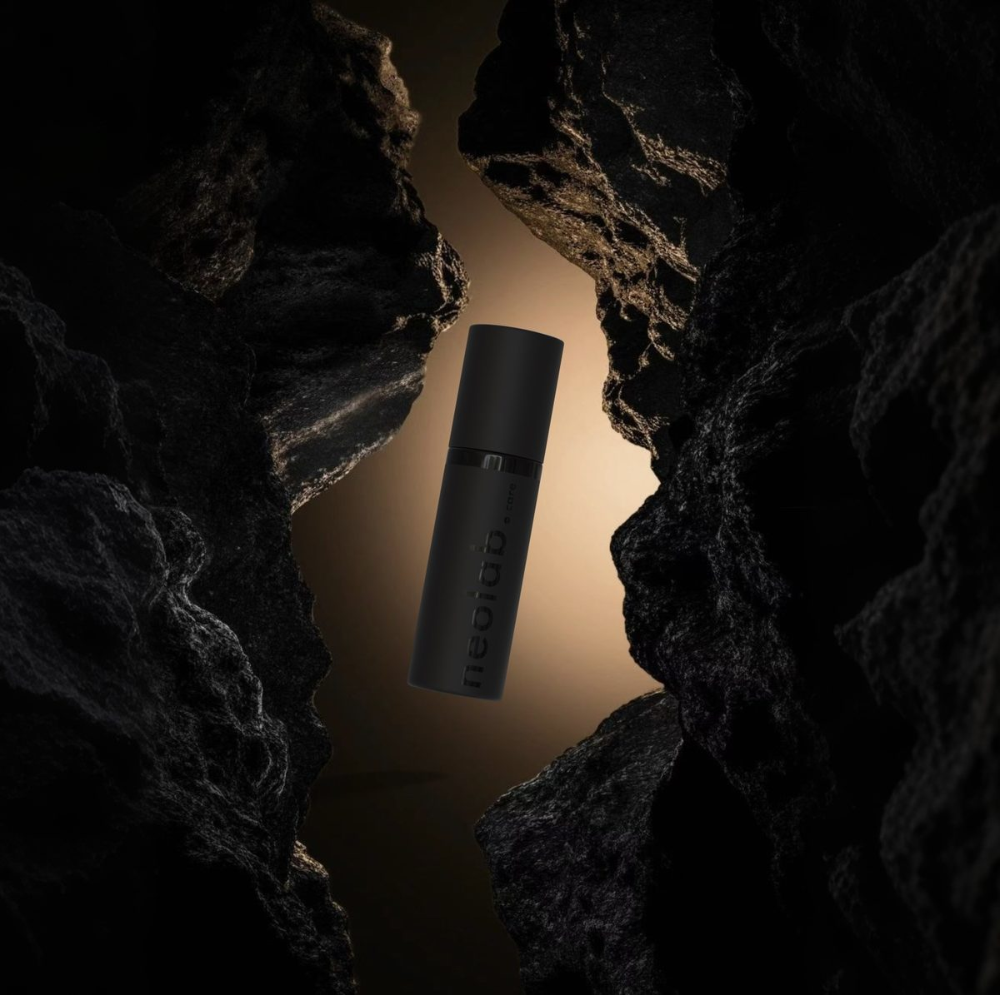
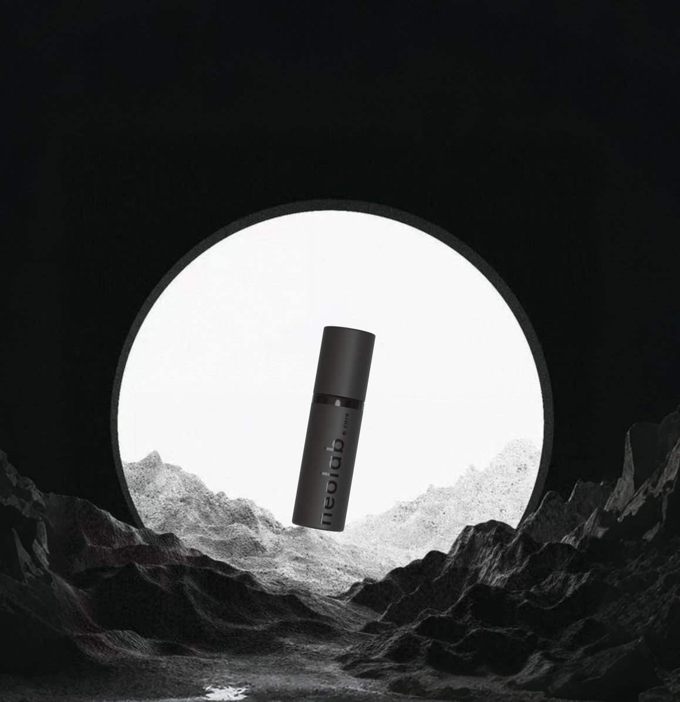
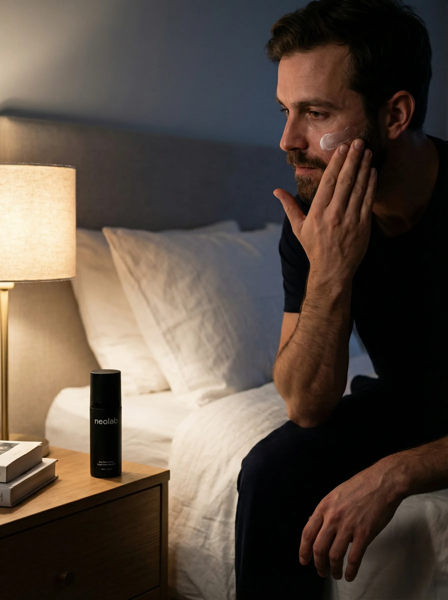

The Frustration
The desire was simple: a skincare routine that performed at a high level without demanding time, attention, or a shelf full of products. Something that could fit into a real day — not a curated one.
The philosophy behind NeolabCare
A premium all-in-one skincare concept created in response to one observation: most routines ask too much, and most products compromise too early.
The desire was simple: a skincare routine that performed at a high level without demanding time, attention, or a shelf full of products. Something that could fit into a real day — not a curated one.
The more we looked, the clearer the pattern became. Better results almost always meant more steps. More actives meant more products. More products meant more decisions, more friction, and more room for inconsistency.
The market is not optimized for your skin. It is optimized for shelf life, retail margins, and routine expansion. Products are formulated to survive distribution, not to arrive at peak potency. The system works against the outcome it promises.
NeolabCare was built as a direct answer to that tension. One premium all-in-one cream, produced fresh to order, formulated around what the skin actually needs — not what a retail shelf can accommodate. Fewer steps. Higher intention. Simpler by design.
Most routines ask more than they give. The complexity becomes the barrier to consistency.
A single all-in-one formulation that consolidates the routine without compromising the result.
Achieving more by doing less. The product earns its place by asking nothing extra of you.



"A formula-first approach to skincare,
created around simplicity, freshness,
and modern use."
— Lareesa Hu · Founder, NeolabCare